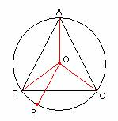

Quincena 1-15 de Diciembre de 2005
De investigación.
Propuesto por Juan Bosco Romero Márquez,
profesor colaborador de la Universidad de Valladolid
Propuesto por
Problema 282
2) Si un triángulo equilátero está inscrito en una circunferencia, la
suma de los cuadrados de los segementos que unen
cualquier punto de la circunferencia a los tres vértices del triángulo es
constante.
Brockway, G. E.
(1895): American Mathematical Monthly, (Volumen II,
May) p. 158
Solución de Maite Peña Alcaraz, estudiante de Industriales en la
Universidad de Comillas (Madrid).:

Tenemos que:
y por tanto queda probado que es constante.